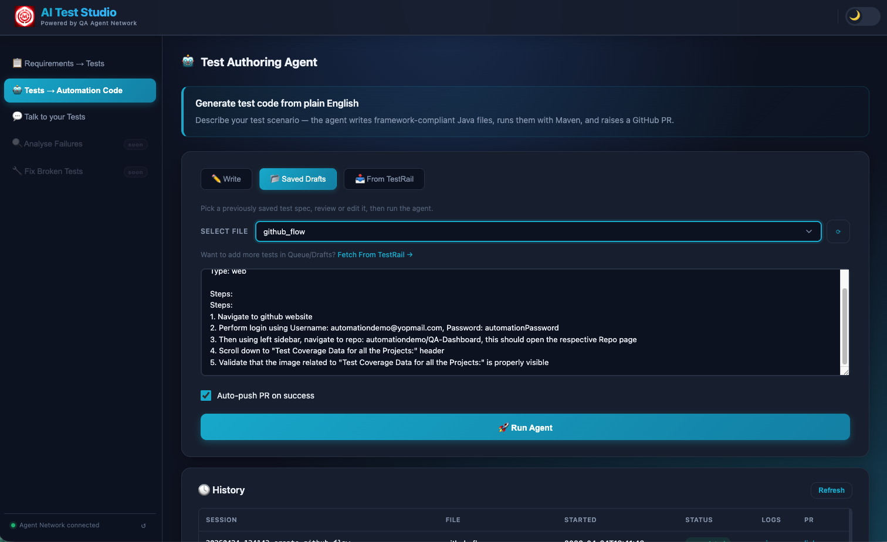
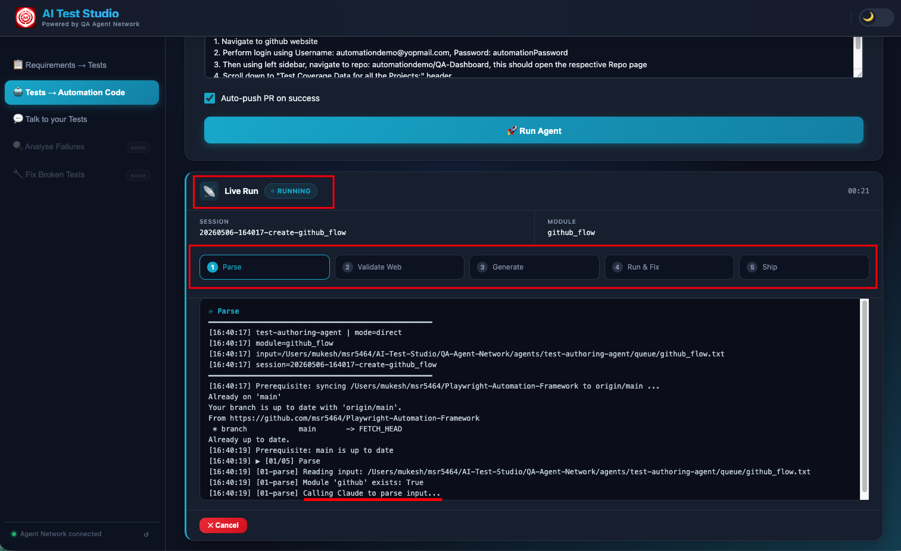
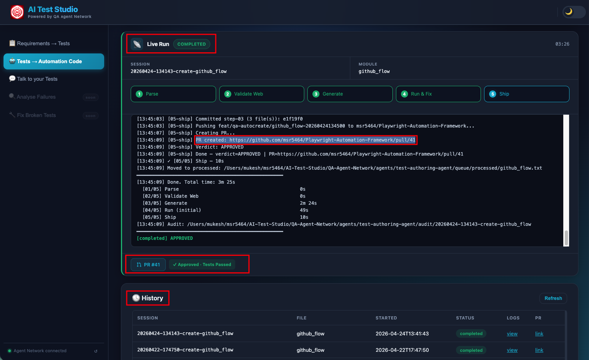

The Test Authoring Agent takes plain-English test steps and turns them into a framework-compliant GitHub PR — complete with real browser validation, compilable Java code, and Maven-verified test execution. Engineers describe what they want to test. The agent handles everything else.
Writing automation code is one of the most time-consuming things a QA engineer does. Not because it's intellectually difficult — the logic is usually straightforward. It's slow because of the overhead: understanding the framework conventions, looking up the right class patterns, getting the right selectors, wiring everything together correctly, debugging compilation errors, running Maven, fixing test failures. A single feature might take 2–3 days from "we need to automate this" to a reviewed PR.
The Test Authoring Agent compresses that to under 10 minutes. And the engineer never touches Java.
The Big Idea
The agent is triggered in one of two ways: through the UI in the Tests → Automation Code tab, or by dropping a .txt file into the queue directory and letting the file-watcher pick it up automatically. Either way, the input is the same: a module name, a platform type (Web, API, or Both), and plain-English test steps describing the scenario.
From that input, a five-step pipeline runs entirely without human involvement. By the time it's done, a git branch exists in the Jarvis repository with complete, framework-compliant Java files, Maven has successfully run the tests, and a GitHub PR has been raised with a description of everything that was generated. A Slack notification goes out. The engineer reviews the diff and merges — or leaves comments and the next iteration picks them up.
The engineer never touches Java. By the time a PR appears in GitHub, the code has been written, validated against a real browser, compiled, tested, and fixed — all without human involvement in any of those steps.

The Test Authoring Agent interface — module name, platform type (Web / API / Both), plain-English test steps, and a "Run Agent" button. You can also pull automatable cases directly from TestRail via the "From TestRail" tab.
The 5-Step Pipeline
Every agent run executes exactly five steps, in sequence. Each step's output feeds into the next. The live console in the UI streams every action in real time — you can watch Claude navigate the browser, see the Java files being written, and follow the Maven output line by line.
Claude Opus reads the plain-English test steps alongside Jarvis/CLAUDE.md — a plain-text conventions file that defines every naming rule, class pattern, and explicit DO/DON'T for the Java framework. This is not a generic code generation prompt. CLAUDE.md tells Claude exactly what package structure to use, how to name every class, what each class type must extend, which helpers are available and how to use them.
The output of Step 01 is a structured JSON generation plan that specifies everything the subsequent steps need: the module name, test type (API / Web / Both), every Java class that needs to be created (Data POJOs, Builders, Helpers, API enum classes, Page Objects, Test classes), their fields and methods, the API endpoints to cover, the UI pages that will be interacted with and their expected element descriptions. No code is written yet — just a precise specification of what will be written.
Before writing a single line of Java, Claude takes control of a real headless Chromium browser via Playwright MCP — the same browser automation tool used by the Jarvis test framework itself. This step only runs for Web or Both platform types; API-only tests skip directly to Step 03.
Claude navigates to the actual staging environment URL from the generation plan. Then it clicks through the feature flow step by step, exactly as described in the plain-English input. For each step, it locates the relevant DOM element, records the confirmed selector (CSS, XPath, or ARIA depending on what's most stable), and marks the step as either STEP_PASSED or STEP_FAILED.
Only confirmed selectors — those that Claude successfully found and interacted with in the real browser — make it into the generation step. This eliminates an entire class of first-run compilation failures: guessed or hallucinated selectors that look plausible but don't exist in the actual DOM. The extra 2–3 minutes spent here saves significantly more time in the debug loop.
With the JSON plan and confirmed selectors in hand, Claude generates the Java files. But it doesn't do this from a blank prompt. Claude reads three inputs simultaneously:
- The JSON generation plan from Step 01
- The confirmed selectors from Step 02
- Nine reference Java files from the Jarvis repository — real, working examples of GitHubHelper, SauceDemoHelper, ApiHelper, and their corresponding test classes. These are not toy examples. They're production code that shows Claude the exact patterns being used, the exact method signatures, the exact annotations.
Claude then writes complete, compilable Java files directly into the Jarvis repository — not as strings to be reviewed, but as actual .java files in the correct package directories. For a Web + API test, this typically includes: a Data POJO, a Builder, a Helper class extending ApiHelper or BasePage, an API enum implementing the ApiDetails interface, Page Object classes extending BasePage, and Test classes extending TestBase with @DataProvider-parameterised test methods.
Maven runs the specific generated test method(s) using a targeted command: mvn test -Dtest=ClassName#methodName. Results are read from test-results/report.json — a structured JSON file written by Jarvis's JsonTestReporter.java after every test run. This gives the agent machine-readable pass/fail status with full failure details, rather than having to parse Maven's console output.
If any test fails — whether from a compilation error, a runtime exception, or an actual assertion failure — the full error output is fed back into Claude's next prompt. Claude now knows exactly what went wrong: the specific line, the specific error message, the specific test that failed. It corrects the code and Maven runs again. This retry loop runs up to three times.
Most generations pass on the first or second attempt. The third attempt is rare and typically signals a structural issue with the original plain-English input that needs clarification — in which case the agent raises the PR anyway with a NEEDS-REVIEW verdict and the full error context attached, so the engineer can resolve it in minutes rather than starting from scratch.
A git branch is created with a structured name: feat/qa-autocreate/<feature>-<timestamp>. All new Java files are committed with a descriptive commit message, pushed to the remote GitHub repository, and gh pr create raises a pull request. The PR description includes a summary of what was generated — which classes, what they cover, and whether the tests passed on the first or second attempt.
A Slack notification goes to #qa-reports with a link to the PR. The engineer opens it, reviews the diff, and merges — or leaves review comments, which are addressed in the next iteration. The entire flow from "click Run Agent" to "PR is open and waiting for review" takes under 10 minutes.

The full Test Authoring Agent view — Write tab for direct input, Saved Drafts for reusing previous inputs, From TestRail to pull automatable cases directly. The live console below streams every step of the pipeline in real time.

The agent pipeline streaming in real time — each numbered step appears as it executes. The console output shows Claude navigating the browser, writing files, and running Maven in sequence.

The final output — generated Java test files committed to the automation repo and a pull request raised automatically, ready for review.
The Secret: CLAUDE.md
The entire agent network's code quality depends on one file: Jarvis/CLAUDE.md. Understanding why this file exists — and what it contains — is essential to understanding why the generated code is framework-compliant rather than generic boilerplate.
Without CLAUDE.md, Claude would generate Java that looks plausible but doesn't fit the framework. Classes with the wrong names. Wrong inheritance hierarchies. Made-up helper methods. Annotations in the wrong places. Code that compiles but doesn't integrate with TestNG's DataProvider setup, or doesn't wire up to the BrowserStack configuration, or doesn't follow the Builder pattern the rest of the codebase uses.
CLAUDE.md solves this by being a complete, plain-text specification of the framework — written for an AI reader, not a human one. It defines:
- Package structure — exactly where every class type lives in the directory tree
- Class naming conventions — module-prefix rules for Data, Builder, Helper, API enum, Page Object, and Test class names
- Inheritance rules — which base classes must be extended and when
- Available helpers — what methods exist in ApiHelper, BasePage, and TestBase, and how to use them correctly
- Explicit DO rules — use
@DataProviderfor parameterised tests, use the Builder pattern for all test data construction, extend TestBase in all test classes - Explicit DO NOT rules — do not use
Thread.sleep, do not hardcode URLs, do not create new helper methods when existing ones serve the purpose
The key leverage point
When the framework changes — a new base class is introduced, a helper method is renamed, a new annotation becomes required — updating CLAUDE.md automatically teaches all agents the new pattern on the next run. No prompt changes are needed. No Python code is updated. The conventions live in the Jarvis repository alongside the Java code, version-controlled and reviewable by the whole team as part of normal code review.
This means the framework itself controls the agent's output. The team that owns the Java framework owns the agent's behaviour, directly, through the same files they already maintain.
Audit Trail
Every agent run creates a full audit trail. A session folder is created at agents/test-authoring-agent/audit/<SESSION_ID>/ the moment a run starts, and each step writes its output there as the pipeline progresses.
This audit trail is not just a log file — it is exposed via the HTTP server. The UI's History tab can replay any past session: you can see the JSON plan from Step 01, watch the browser validation steps, and review exactly what was generated and why. This is particularly useful when a NEEDS-REVIEW verdict needs investigation — everything Claude tried, and every error it encountered, is preserved in structured form.
Why structured audit files matter
Debugging an AI agent run should not require reading raw log files. By writing each step's output as structured JSON, the system makes every decision inspectable: you can see exactly what plan Claude created, exactly which selectors were confirmed, exactly what errors caused a retry, and exactly what corrections were made. When something goes wrong — and occasionally something does — the audit trail lets you find it in seconds rather than minutes.
Testing Mode (For Iteration)
Developing new scenarios, debugging a specific failure, or iterating on the CLAUDE.md conventions means running the agent repeatedly. Steps 01 and 02 — the LLM parse and the browser validation — are the most expensive parts of the pipeline: they take 3–4 minutes combined and incur API costs on every run.
Testing mode solves this. Set the environment variable TESTING_MODE=true and the agent caches the output of Steps 01 and 02 to disk on the first run. On all subsequent runs for the same module, it restores from cache — skipping the Claude parse and the Playwright browser session entirely. Execution jumps straight to Step 03 (Generate), which means you can iterate on code generation and the run/fix loop without paying the cost of the first two steps each time.
The cache is keyed by module name, so you can have multiple modules cached simultaneously. Clearing the cache for one module triggers a fresh Step 01 and Step 02 on the next run for that module, without affecting cached state for others.
This mode is explicitly designed for the development workflow: build the agent, run it, see what it generates, update CLAUDE.md or the input, run it again — fast. In production runs, TESTING_MODE is not set, and every step executes from scratch every time.
Next: The Test Triaging Agent
The Authoring Agent writes the code. The Triaging Agent keeps your CI signal clean — classifying every failure as a product bug or automation issue automatically, with an adversarial review step to catch misclassifications.